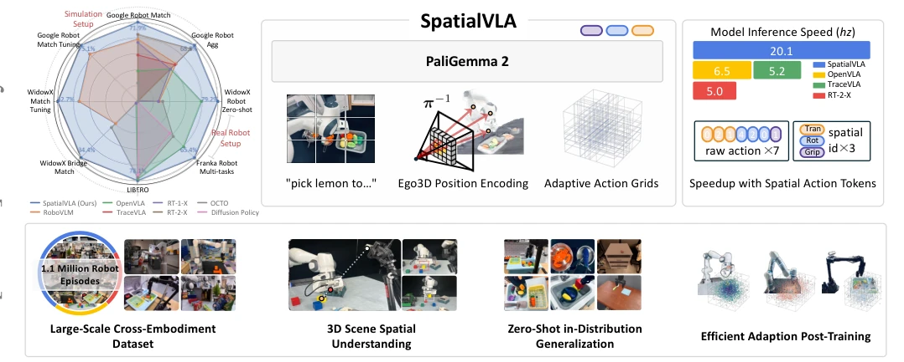
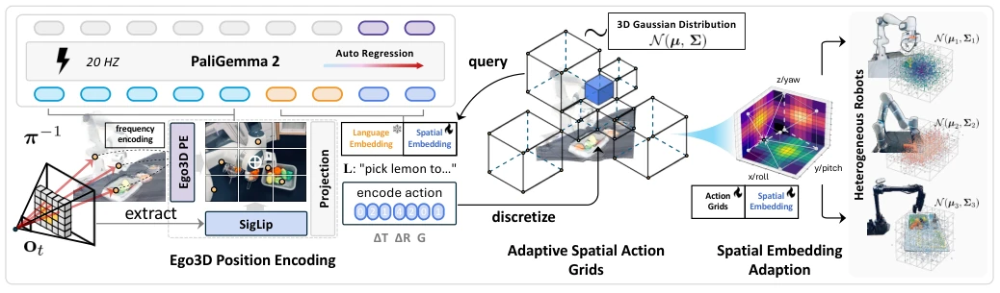
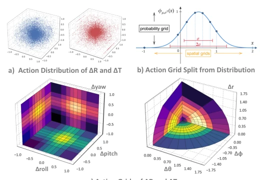
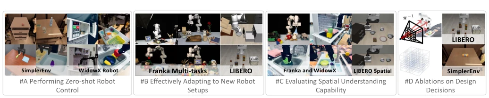
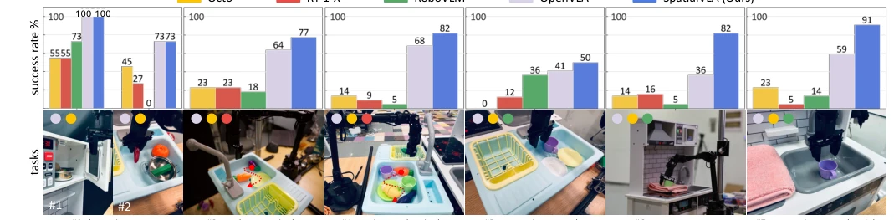
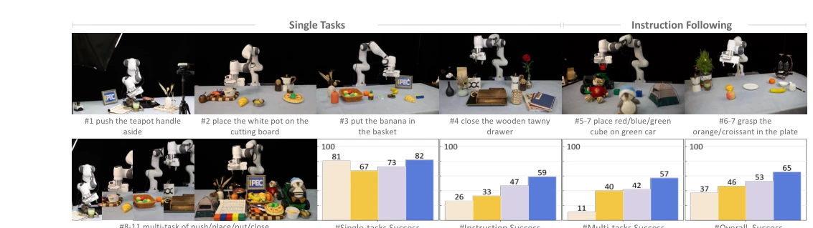
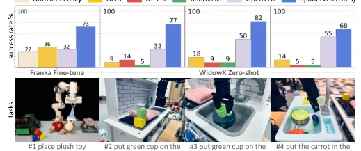
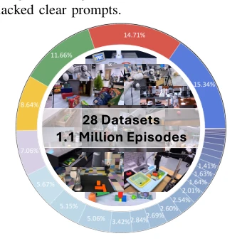

SpatialVLA: Exploring Spatial Representations for Visual-Language-Action Model
Delin Qu, Haoming Song, Qizhi Chen, Yuanqi Yao, Xinyi Ye, Yani Ding abspdf
论文点评Review
SpatialVLA 这名字起得挺响亮，直接冲着“空间智能”去了。作者给 VLA 模型强行塞了个 3D 深度感知，试图解决现有模型“平面眼”的毛病。虽然本质还是基于 VLM 微调，但通过 Ego3D 编码和自适应动作网格，确实把推理速度提上去了，还顺便在 WidowX 和 Franka 上刷了榜。不过，所谓的“空间理解”到底是不是深度图加个位置编码就能搞定，还得打个问号。毕竟把 3D 信息硬塞进 2D 特征里，和真正的 3D 几何推理还是有差距的。好在实验数据挺硬，零样本和微调表现都压了 OpenVLA 一头，算是给具身智能的“空间焦虑”开了个不错的药方，就是不知道长程任务里会不会露馅，毕竟长序列规划才是大模型真正的试金石。
The name "SpatialVLA" is quite striking, directly targeting "spatial intelligence". The authors forcibly integrated 3D depth perception into the VLA model, attempting to address the "flat-eye" flaw of existing models. Although essentially still based on VLM fine-tuning, through Ego3D encoding and adaptive action grids, the inference speed was indeed improved, and benchmarks were achieved on WidowX and Franka. However, whether the so-called "spatial understanding" can truly be resolved by simply adding position encoding to depth maps remains questionable. After all, forcing 3D information into 2D features still has a gap compared to true 3D geometric reasoning. Fortunately, the experimental data is robust, with zero-shot and fine-tuning performance surpassing OpenVLA, serving as a decent remedy for the "spatial anxiety" of embodied intelligence, though it remains to be seen if it will hold up in long-horizon tasks, as long-sequence planning is the true touchstone for large models.
研究动机Motivation
现有 VLA 模型如 RT-2 [7] 和 OpenVLA [30] 主要依赖 2D 视觉输入，缺乏对 3D 物理世界的精确感知，导致在复杂空间任务中表现受限。不同机器人本体（embodiment）的相机安装位置和动作空间异构，使得跨机器人泛化极其困难 [48]。虽然 Octo [48] 尝试统一配置，但 3D 空间理解能力仍滞后。人类本能构建空间心智模型，而机器人往往只能处理平面图像，无法对齐物体在 3D 空间中的位置。因此，如何为 VLA 模型注入 3D 空间智能，实现跨本体的通用策略，是当前的关键问题。现有方法多关注数据规模，忽视了空间表示的异构性对齐，导致模型在未见过的机器人设置上泛化能力不足。
Existing VLA models such as RT-2 [7] and OpenVLA [30] primarily rely on 2D visual input, lacking precise perception of the 3D physical world, leading to limited performance in complex spatial tasks. The heterogeneity of camera installation positions and action spaces across different robot embodiments makes cross-robot generalization extremely difficult [48]. Although Octo [48] attempts to unify configurations, 3D spatial understanding capabilities still lag behind. Humans instinctively construct spatial mental models, whereas robots often can only process flat images and cannot align object positions in 3D space. Therefore, how to inject 3D spatial intelligence into VLA models to achieve embodiment-agnostic general policies is the key issue at present. Existing methods mostly focus on data scale, ignoring the alignment of spatial representation heterogeneity, resulting in insufficient generalization ability of models on unseen robot settings.

Fig. 1: We present SpatialVLA, a spatial-enhanced vision-language-action model that is trained on 1.1 Million real robot episodes. The model is equipped with Ego3D Position Encoding and Adaptive Action Grids to explore spatial representations for generalist robot policies, achieving superior 3D scene spatial understanding, zero-shot in-distribution generalization, and efficient adaption to new robot setups. The model achieves state-of-the-art performance across a diverse range of evaluations and shows significantly faster inference speed with fewer tokens per action.
SpatialVLA is built based on PaliGemma2, with the core being Ego3D Position Encoding and Adaptive Action Grids. The pipeline is divided into two stages: pre-training and fine-tuning. Pre-training uses 1.1M real robot data. Ego3D encoding utilizes ZoeDepth [4] to estimate depth, combining camera intrinsics to back-project 2D pixels to an egocentric 3D coordinate system, fusing into visual features through sine encoding and MLP, without requiring extrinsic calibration. Regarding actions, 7D continuous actions (translation, rotation, gripper) are mapped to 3 spatial action Tokens. Translation and rotation actions are adaptively partitioned into grids (non-uniform) based on Gaussian distribution fitting, rather than traditional linear binning. In the fine-tuning stage, for new robots, the Gaussian distribution is refitted based on new data distributions, and new action Token embeddings are initialized via trilinear interpolation to achieve rapid adaptation. This design reduces the number of Tokens, improves inference speed, while maintaining action continuity.

Fig. 2: Overview of SpatialVLA. Given an image observation ot and a task instruction L, the model processes the image using Ego3D Position Encoding and auto-regressively predicts spatial action tokens, which are then de-tokenized to generate continuous actions At for robot control. The model comprises three key components: (1) SigLIP vision encoder extracts 2D semantic features, which are then infused with 3D spatial context via Ego3D Position Encoding; (2) continuous 7D actions ∆T, ∆R, G are translated to 3 spatial action tokens by querying Adaptive Action Grids and auto-regressively predicted and de-tokenized for robot control; (3) in post-training, action grids and spatial embeddings are adapted from new Gaussian distributions to facilitate effective transfer to new robot setups.

Fig. 3: Illustration of adaptive action grids. (a) Statistics of translation and rotation action movements on the whole pre- training mixture, (b) grids are split on each action variable according to the probability density function of fitted Gaussian distribution, and (c) the obtained adaptive action grids in translation and rotation action spaces.
Evaluated on SimplerEnv (Google Robot, WidowX), LIBERO, and Franka. Baselines include RT-1-X [13], OpenVLA [30], Octo [48], etc. Metrics are success rate and visual matching. SpatialVLA achieved 71.9% zero-shot visual matching on SimplerEnv, outperforming RoboVLM [32] and RT-2-X [13]. Zero-shot success rate significantly leads on WidowX. In Franka fine-tuning tasks, LIBERO-Spatial reached 88.2%. Ablation shows Ego3D encoding significantly improves robustness to light/texture changes, and adaptive grids generalize better than linear 256 binning. However, LIBERO-Long long-horizon tasks still have bottlenecks and depend on depth estimation. Experiments prove the importance of spatial representation for cross-robot generalization, but also expose deficiencies in long-horizon planning capabilities.

Fig. 4: Experiment Setup. We evaluate SpatialVLA across 7 robot learning scenarios, 16 real-robot tasks, and 48 simulation setups, focusing on three key aspects: zero-shot control, adaptability to new setups, and spatial understanding. We also conduct a thorough ablation study on a mixed Fractal and Bridge dataset to verify our design decisions.

Fig. 5: Zero-shot Robot Control Evaluation on WidowX Robot. We evaluate SpatialVLA across 7 task suites to explore the language grounding, semantic understanding, and motion sensing capabilities, with varying backgrounds, poses, and motion distractors. SpatialVLA achieves the highest average success rate, outperforming all generalist manipulation policies.

Fig. 6: Adapting to New Robot Setups on Franka Robot. SpatialVLA serves as a generalist robot control policy, achieving better performance across multiple setups, and can be effectively used as an initialization for fine-tuning to new robot tasks.

Fig. 7: Spatial Understanding Capability Evaluation. Ben- efiting from the proposed Ego3D Position Encoding, Spa- tialVLA exhibits superior performance in understanding spa- tial prompts and complex spatial layout tasks.

Fig. 9: SpatialVLA Training Dataset Mixture Visualization.